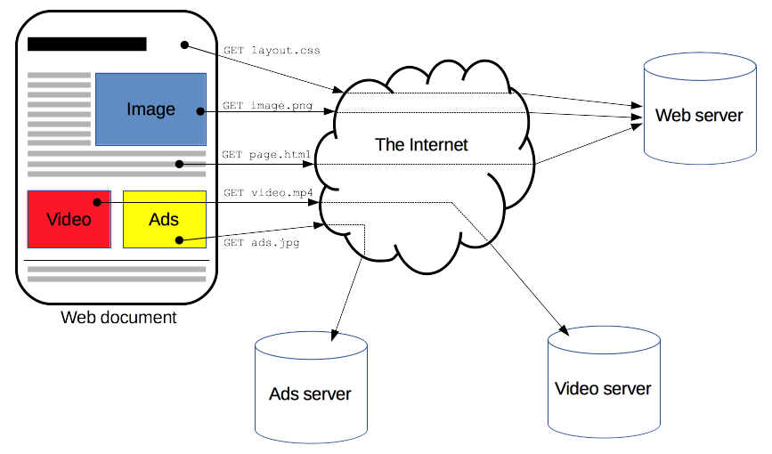
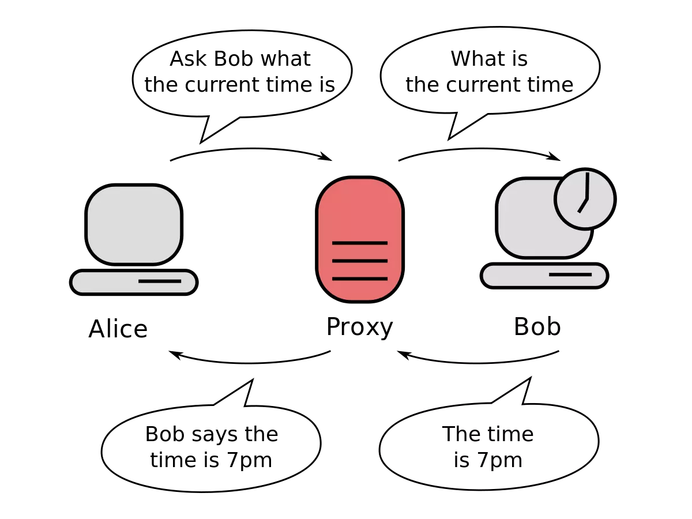
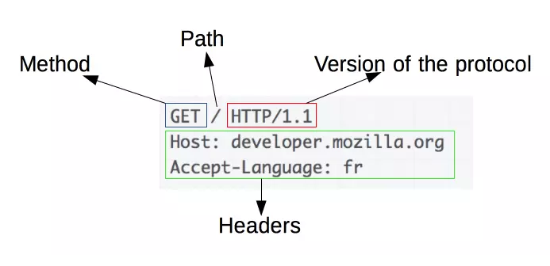
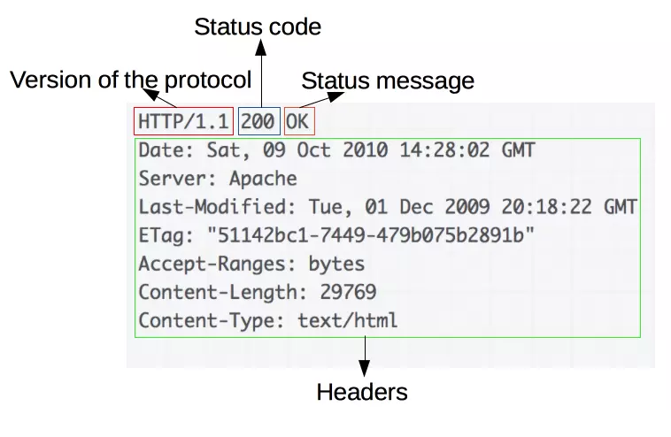

Протокол передачи гипертекста (Hypertext Transfer Protocol - HTTP) -
это прикладной протокол для передачи гипертекстовых документов, таких как HTML. Он создан для связи
между веб-браузерами и веб-серверами, хотя в принципе HTTP может использоваться и для других целей.
Протокол следует классической клиент-серверной модели, когда клиент открывает соединение для создания
запроса, а затем ждёт ответа. HTTP - это протокол без сохранения состояния, то есть сервер не сохраняет
никаких данных (состояние) между двумя парами "запрос-ответ". Несмотря на то, что HTTP основан на TCP/IP,
он также может использовать любой другой протокол транспортного уровня с гарантированной доставкой.
Описание

Веб-страница - это совокупность различных ресурсов
HTTP — это протокол, позволяющий получать различные ресурсы,
например HTML-документы. Протокол HTTP лежит в основе обмена данными в Интернете. HTTP является
протоколом клиент-серверного взаимодействия, что означает инициирование запросов к серверу
самим получателем, обычно веб-браузером (web-browser). Полученный итоговый документ будет
(может) состоять из различных поддокументов, являющихся частью итогового документа: например,
из отдельно полученного текста, описания структуры документа, изображений, видео-файлов,
скриптов и многого другого.
Клиенты и серверы взаимодействуют, обмениваясь одиночными сообщениями (а не потоком данных).
Сообщения, отправленные клиентом, обычно веб-браузером, называются запросами, а сообщения,
отправленные сервером, называются ответами.
Составляющие систем, основанных на HTTP

Между браузером и сервером много устройств-посредников
HTTP — это клиент-серверный протокол, то есть запросы отправляются
какой-то одной стороной — участником обмена (user-agent) (либо прокси вместо него).
Чаще всего в качестве участника выступает веб-браузер, но им может быть кто угодно, например,
робот, путешествующий по Сети для пополнения и обновления данных индексации веб-страниц для
поисковых систем. Каждый запрос (англ. request) отправляется серверу, который обрабатывает
его и возвращает ответ (англ. response). Между этими запросами и ответами как правило существуют
многочисленные посредники, называемые прокси, которые выполняют различные операции и работают
как шлюзы или кэш, например. Обычно между браузером и сервером гораздо больше различных
устройств-посредников, которые играют какую-либо роль в обработке запроса: маршрутизаторы,
модемы и так далее. Благодаря тому, что Сеть построена на основе системы уровней (слоёв)
взаимодействия (сетевая модель OSI), эти посредники "спрятаны" на сетевом и транспортном уровнях.
Клиент: участник обмена
Участник обмена (user agent) — это любой инструмент или устройство,
действующие от лица пользователя. Эту задачу преимущественно выполняет веб-браузер; в некоторых
случаях участниками выступают программы, которые используются инженерами и веб-разработчиками
для отладки своих приложений. Браузер всегда является той сущностью, которая создаёт запрос.
Сервер обычно этого не делает, хотя за многие годы существования сети были придуманы способы,
которые могут позволить выполнить запросы со стороны сервера. Чтобы отобразить веб-страницу,
браузер отправляет начальный запрос для получения HTML-документа этой страницы. После этого
браузер изучает этот документ и запрашивает дополнительные файлы, необходимые для отображения
содержания веб-страницы (исполняемые скрипты, информацию о макете страницы - CSS таблицы стилей,
дополнительные ресурсы в виде изображений и видео-файлов), которые непосредственно являются
частью исходного документа, но расположены в других местах сети. Далее браузер соединяет все
эти ресурсы для отображения их пользователю в виде единого документа — веб-страницы. Скрипты,
выполняемые самим браузером, могут получать по сети дополнительные ресурсы на последующих этапах
обработки веб-страницы, и браузер соответствующим образом обновляет отображение этой страницы для
пользователя. Веб-страница является гипертекстовым документом. Это означает, что некоторые части
отображаемого текста являются ссылками, которые могут быть активированы (обычно нажатием кнопки мыши)
с целью получения и соответственно отображения новой веб-страницы (переход по ссылке). Это позволяет
пользователю "перемещаться" по страницам сети (Internet). Браузер преобразует эти гиперссылки в
HTTP-запросы и в дальнейшем полученные HTTP-ответы отображает в понятном для пользователя виде.
Веб-сервер
На другой стороне коммуникационного канала расположен сервер,
который обслуживает (англ. serve) пользователя, предоставляя ему документы по запросу.
С точки зрения конечного пользователя, сервер всегда является некой одной виртуальной
машиной, полностью или частично генерирующей документ, хотя фактически он может быть
группой серверов, между которыми балансируется нагрузка, то есть перераспределяются
запросы различных пользователей, либо сложным программным обеспечением, опрашивающим
другие компьютеры (такие как кеширующие серверы, серверы баз данных, серверы приложений
электронной коммерции и другие). Сервер не обязательно расположен на одной машине, и
наоборот - несколько серверов могут быть расположены (поститься) на одной и той же машине.
В соответствии с версией HTTP/1.1 и имея Host заголовок, они даже могут делить тот же
самый IP-адрес.
Прокси
Между веб-браузером и сервером находятся большое количество
сетевых узлов, передающих HTTP-сообщения. Из-за слоистой структуры большинство из
них оперируют также на транспортном сетевом или физическом уровнях, становясь
прозрачным на HTTP-слое и потенциально снижая производительность. Эти операции на
уровне приложений называются прокси. Они могут быть прозрачными или нет (изменяющие
запросы не пройдут через них), и способны исполнять множество функций:
caching (кеш может быть публичным или приватным, как кеш браузера)
фильтрация (как сканирование антивируса, родительский контроль, и т.д.)
выравнивание нагрузки (позволить нескольким серверам обслуживать разные запросы)
аутентификация (контролировать доступ к разным ресурсам)
протоколирование (разрешение на хранение истории операций)
HTTP-поток
Когда клиент хочет взаимодействовать с сервером, являющимся
конечным сервером или промежуточным прокси, он выполняет следующие шаги:
Открытие TCP-соединения: TCP-соединение будет использоваться для отправки запроса
(или запросов) и получения ответа. Клиент может открыть новое соединение,
переиспользовать существующее или открыть несколько TCP-соединений к серверу.
Отправка HTTP-сообщения: HTTP-сообщения (до HTTP/2) являются человекочитаемыми.
Начиная с HTTP/2, простые сообщения инкапсулируются во фреймы, делая невозможным
их чтение напрямую, но принципиально остаются такими же.
GET / HTTP/1.1
Host: developer.mozilla.org
Accept-Language: fr
Читает ответ от сервера:
HTTP/1.1 200 OK
Date: Sat, 09 Oct 2010 14:28:02 GMT
Server: Apache
Last-Modified: Tue, 01 Dec 2009 20:18:22 GMT
ETag: "51142bc1-7449-479b075b2891b"
Accept-Ranges: bytes
Content-Length: 29769
Content-Type: text/html
Закрывает или переиспользует соединение для дальнейших запросов.
Если активирован HTTP-конвейер, несколько запросов могут быть отправлены без
ожидания получения первого ответа целиком. HTTP-конвейер тяжело внедряется в
существующие сети, где старые куски ПО сосуществуют с современными версиями.
HTTP-конвейер был заменён в HTTP/2 на более надёжные мультиплексные запросы во фрейме.
HTTP-сообщения
HTTP/1.1 и более ранние HTTP-сообщения человекочитаемые.
В версии HTTP/2 эти сообщения встроены в новую бинарную структуру, фрейм,
позволяющий оптимизации, такие как компрессия заголовков и мультиплексирование.
Даже если часть оригинального HTTP-сообщения отправлена в этой версии HTTP,
семантика каждого сообщения не изменяется и клиент воссоздаёт (виртуально)
оригинальный HTTP-запрос. Это также полезно для понимания HTTP/2-сообщений
в формате HTTP/1.1. Существует два типа HTTP-сообщений, запросы и ответы,
каждый в своём формате.
Запросы

HTTP-запрос
Запросы содержат следующие элементы:
HTTP-метод, обычно глагол подобно GET, POST или существительное, как OPTIONS
или HEAD, определяющее операцию, которую клиент хочет выполнить. Обычно, клиент
хочет получить ресурс (используя GET) или передать значения HTML-формы (используя
POST), хотя другие операция могут быть необходимы в других случаях.
Путь к ресурсу: URL ресурсы лишены элементов, которые очевидны из контекста,
например без протокола (http://), домена (здесь developer.mozilla.org), или
TCP порта (здесь 80).
Версию HTTP-протокола.
Заголовки (опционально), предоставляющие дополнительную информацию для сервера.
Или тело, для некоторых методов, таких как POST, которое содержит отправленный ресурс.
Ответы

HTTP-ответ
Ответы содержат следующие элементы:
Версию HTTP-протокола.
HTTP код состояния, сообщающий об успешности запроса или причине неудачи.
Сообщение состояния — краткое описание кода состояния.
HTTP — лёгкий в использовании расширяемый протокол. Структура клиент-сервера,
вместе со способностью к простому добавлению заголовков, позволяет HTTP продвигаться
вместе с расширяющимися возможностями Сети. Хотя HTTP/2 добавляет некоторую сложность,
встраивая HTTP сообщения во фреймы для улучшения производительности, базовая структура
сообщений осталась с HTTP/1.0. Сессионный поток остаётся простым, позволяя исследовать
и отлаживать с простым монитором HTTP-сообщений.